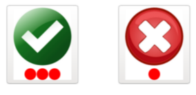

<!DOCTYPE html>
<html>
    <head>
        <title>My experiment</title>
        <script src="jspsych-6.0.4/jspsych.js"></script>
        <script src="jspsych-6.0.4/plugins/jspsych-html-keyboard-response.js"></script>
        <script src="jspsych-6.0.4/plugins/jspsych-image-button-response.js"></script>
        <script src="jspsych-instructions-no_pagenum.js"></script>
        <script src="circles.js?v=1"></script>
        <script src="report_confidence.js"></script>
        <link href="jspsych-6.0.4/css/jspsych.css" rel="stylesheet" type="text/css"></link>
        <meta charset="utf-8">
    </head>
    <body></body>
    <script>

    var uid;
    while (!uid) {
      uid = window.prompt('uid:', '')
    }

    var points_to_pass=10;
    var stepSizes=[0.1,0.05,0.05,0.01];
    var level=0.3; // initiate level difficulty
    var nUp=1;
    var nDown=3;
    var trial_index=0;
    var consecutive_wins=0;
    var consecutive_losses=0;
    var step_index=-1;
    var step=[];
    var max_levels=50;  // maximum number of trials
    var pass_count=0;
    var t0;
    var timeout=5*60*1000;


    var saveData = function() {

      function saveLocal(filename, csvdata) {
          localStorage.setItem(filename, csvdata)
          var blob = new Blob([csvdata], {type: 'text/csv'})
          var a = document.createElement('a')
          var url = URL.createObjectURL(blob)
          a.href = url
          a.download = filename + '.csv'
          document.body.appendChild(a)
          a.click()
          setTimeout(function() {
            document.body.removeChild(a)
            window.URL.revokeObjectURL(url)
          }, 0)
      }

      var basename = uid.toString().padStart(3, '0') + '_' + jsPsych.startTime().toISOString()

      saveLocal('metacog-data_' + basename, jsPsych.data.get().csv())
      //saveLocal('metacog-intdata_' + basename, jsPsych.data.getInteractionData().csv())

    };

    var standby = {
      type: 'html-keyboard-response',
      stimulus: `
        <p style="background-color:#AAA;height:100vh;width:100vw;font-size:75vh;margin:0;display:table-cell;vertical-align:middle">
          ${uid.toString().padStart(3, '0')}
        </p>
        `,
      choices: jsPsych.NO_KEYS,
      on_load: function() {
        window.addEventListener('keydown', function _listener(event) {
          console.log(event.key.toLowerCase())
          if(event.key.toLowerCase() == ' ') {
            jsPsych.finishTrial( {'key_press': 'space'} )
            window.removeEventListener('keydown', _listener)
          };
        });
      }
    };

    var intro = {
      type: 'instructions-no_pagenum',
      pages: [
        "<p align='center' style='font-size:40px;' > WELCOME TO THE CIRCLES GAME! <br><br> CLICK NEXT TO LEARN HOW TO PLAY</p>",
        "<p align='center' ><div  style='font-size:30px;'> IN THIS GAME YOU WILL SEE MANY CIRCLES<br> <br> AND YOU HAVE TO CLICK ON THE LARGEST ONE <br> </div>  <div style='font-size:20px';> CLICK NEXT TO CONTINUE </div></p>",
        "<p align='center' style='font-size:30px;' > AFTER CHOOSING THE LARGEST ONE, YOU WILL SEE TWO BUTTONS. <br><br><br>  <br><br><br> IF YOU ARE SURE THAT YOU CHOSE THE RIGHT CIRCLE, PRESS THE GREEN ONE <br><br><br> AND IF YOU ARE NOT SURE, PRESS THE RED ONE  </p>  ",
        "<p align='center' style='font-size:25px;' > IF YOU PRESS THE GREEN BUTTON AND YOU HAD CHOSEN THE RIGHT CIRLCE, YOU WIN 3 POINTS. <br><br>BUT IF YOU HAD NOT CHOSEN THE RIGHT CIRCLE, YOU LOSE 3 POINTS.<br><br> <br>AND IF YOU PRESS THE RED BUTTON, YOU ALWAYS WIN 1 POINT. <br> </p>  ",
        "<p align='center' style='font-size:35px;' > EACH TIME YOU GET TO 10 POINTS OR MORE YOU GO TO THE NEXT LEVEL!<br><br>CLICK NEXT TO START </p>",
      ],
      allow_keys: false,
      allow_backward: true,
      show_page_number: true,
      show_clickable_nav: true,
      button_label_previous: 'BACK',
      button_label_next: 'NEXT',
    }

    var trial = {
        type: 'circles',
        points_to_pass: points_to_pass,
        points: function(){
          var results = jsPsych.data.get().select("accum_score").values;
          points=results[results.length-1];
          if (points >= points_to_pass){
            points=points%points_to_pass;
          }
          return points;
        },
        on_start: function(){
          trial_index++;
        },
        level: function(){
          if (trial_index>0){  // this is run before on_start
            var results = jsPsych.data.get().select("won").values;
            var last_trial_won=results[results.length-1];
            if ((last_trial_won && consecutive_wins ==1) || (!last_trial_won && consecutive_losses==1) ){ // reverse tendency
              step_index++;
              step=stepSizes[Math.min(step_index,stepSizes.length-1)];
            };
            if (last_trial_won && (consecutive_wins >= nDown)){
              level=Math.max(0,level-step);
            } else if (!last_trial_won && (consecutive_losses>=nUp)){
              level=Math.min(1,level+step);
            };
          };
          return level;
        },
        on_finish: function(){
            var results = jsPsych.data.get().select("won").values;
            var last_trial_won=results[results.length-1];
            if(last_trial_won){
              consecutive_wins++;
              consecutive_losses=0;
            }else{
              consecutive_losses++;
              consecutive_wins=0;
            }
        }
    };

    var report_confidence={
      type:'report_confidence',
      points_to_pass: points_to_pass,
      won: function(){
        var results = jsPsych.data.get().select("won").values;
        return results[results.length-1];
      },
      points: function(){
        var results = jsPsych.data.get().select("accum_score").values;
        points=results[results.length-1];
        if (points >= points_to_pass){
          points=points%points_to_pass;
        }
        return points;
      }
    };

    var if_node = {
      timeline: [trial,report_confidence],
      loop_function: function(){
        var results = jsPsych.data.get().select("accum_score").values;
        accum_score= results[results.length-1];
        if((accum_score>=points_to_pass)||trial_index>=max_levels||new Date()-t0>=timeout){
          if (accum_score>=points_to_pass) {
            pass_count++;
          };
          return false;
        } else{
          return true;
        }
      }
    };

    var did_win = {
      type: "image-button-response",
      stimulus: "images/congrats.jpg",
      trial_duration: 1000,
      choices: []
    };


    var big_if_node={
      timeline:[if_node,did_win],
      loop_function: function(){
        if (trial_index>=max_levels||new Date()-t0>=timeout){
          return false;
        }else{
          return true;
        }
      },
      on_load: function() {
        if (!t0) {
          t0 = new Date();
        }
      }
    }

    var winner = {
      type: 'html-keyboard-response',
      stimulus: function() {
        var score = pass_count * points_to_pass + jsPsych.data.get().select("accum_score").values.slice(-1)[0] % points_to_pass
        var html = `
          <div style="position:relative;background-color:#00aa00;height:100vh;width:100vw;display:table-cell;vertical-align:middle">
            <p style="font-size:5vw;margin:0;color:#cc9900">
              YOU WON${score > 0 ? ' ' + score + ' POINT' : ''}${score > 1 ? 'S' : ''}!
            </p>
          `;
        return html
        },
      on_load: function() {
        setTimeout(saveData, 100)
      },
      choices: jsPsych.NO_KEYS,
    }

    var endExperiment = function(event) {
      if(event.key.toLowerCase() == 'q' && event.ctrlKey && event.altKey) {
        window.removeEventListener('keydown', endExperiment)
        jsPsych.pauseExperiment()  // prevent next trial from loading after finishing current trial
        jsPsych.finishTrial()
        setTimeout(saveData, 100)
        jsPsych.endExperiment(`
          <p>La sesión ha finalizado.</p>
          `
        );
        jsPsych.resumeExperiment();
      }
    }

    window.addEventListener('keydown', endExperiment)

    jsPsych.init({
      timeline: [standby,intro, big_if_node, winner],
      //timeline: [standby, intro, big_if_node, winner],
      // on_finish: function() {
      //   jsPsych.data.displayData();
      // },
      default_iti: 250
    });

    </script>
</html>
